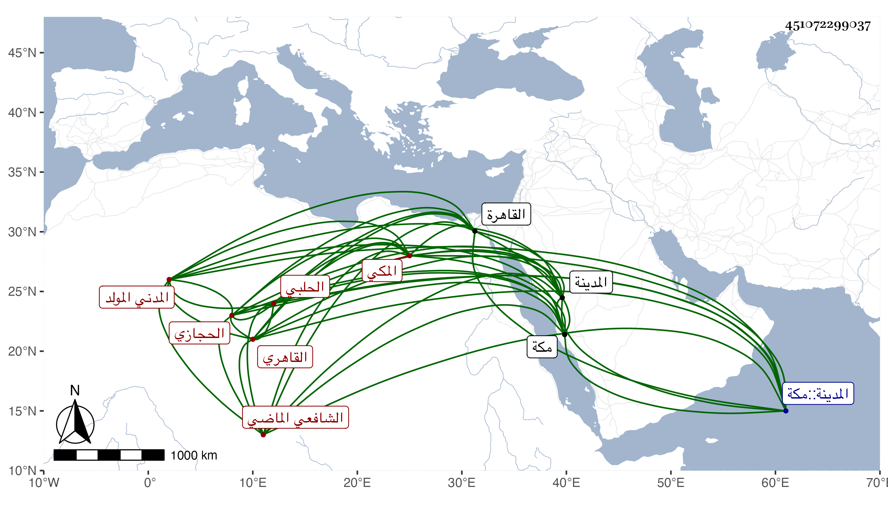

0902Sakhawi.DawLamic.ITO20230111-ara1.EIS1600.451072299037
Biography ID: 451072299037
148
محمد بن محمد بن إسماعيل بن يوسف بن عثمان بن عماد الشمس بن الشمس ابن العماد الحلبي الأصل الحجازي المدني المولد المكي ثم القاهري الشافعي الماضي أبوه ، ويعرف بابن الحلبي وبابن أخت الغرس خليل السخاوي . ولد في سنة تسع وتسعين وسبعمائة بالمدينة ونشأ بمكة في كنف أبيه فحفظ القرآن وسمع علي ابن صديق الأمالي والقراءة لإبني عفان ، وقدم القاهرة وولى نظر دار الضرب وقتا وسافر بحمل الحرمين في بعض السنين وصحب الظاهر جقمق بانضمامه لخاله وأثرى ، وكان خيرا دينا حسن الخط منجمعا عن الناس مديما للجماعة في سعيد السعداء وشهود السبع بها غالبا وله بستان فيه منظرة وأماكن سفل قنطرة الحاجب ولجماعة من الفضلاء إليه بعض التردد كالشهاب التوتي والعلم سليمان الحوفي وربما كان صاحب الترجمة يقرأ عليه وعلى غيره ، اجتمعت به في بستانه وسمعت منه من نظم والده شيئا بل قرأت عليه الأمالي المذكورة . ومات في ربيع الأول سنة خمس وخمسين رحمه الله وإيانا .
